For the best viewing experience, please select the highest available quality in the settings menu at the top right of the video player.
AR Apps
Festum Virtual
Spolia botanique
Floral Tracer
Spolia botanique
Floral Tracer
For the best viewing experience, please select the highest available quality in the settings menu at the top right of the video player.
Click the icon on the top right corner of the video to watch in 4K high quality
Festum Virtual enables the immersive exploration of digitized gardens in augmented reality. Users can navigate the three-dimensional botanical archive, experiencing the festival gardens as both spatial and temporal records.
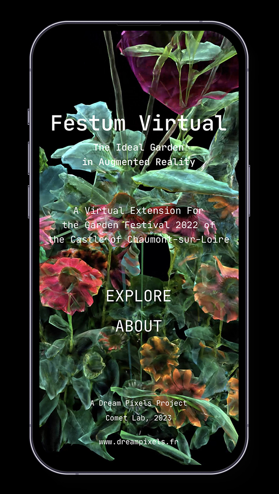
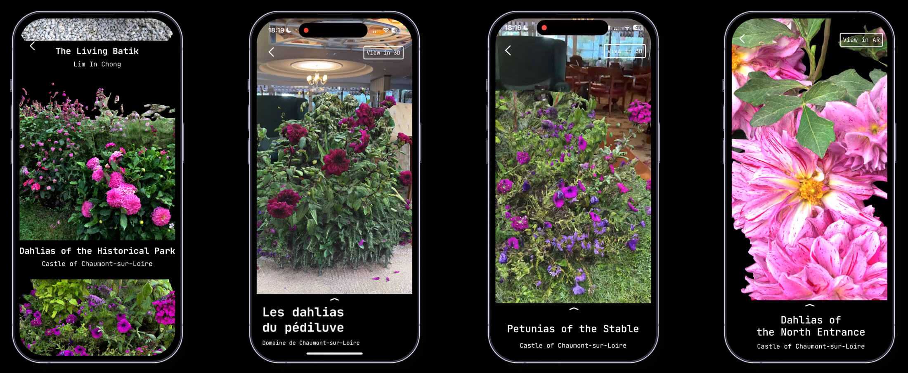
Spolia Botanique offers immersive experiences within virtual gardens. These environments are created through the recycling and recomposition of gardens that we have previously digitized. To animate them, we integrated animal life and sound recordings captured in forest environments. Hummingbirds move through the air, while large butterflies rest upon the flowers. The application presents three distinct gardens:
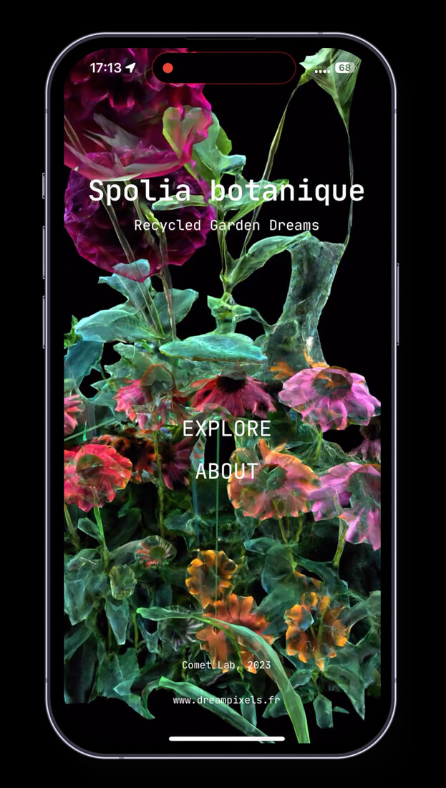
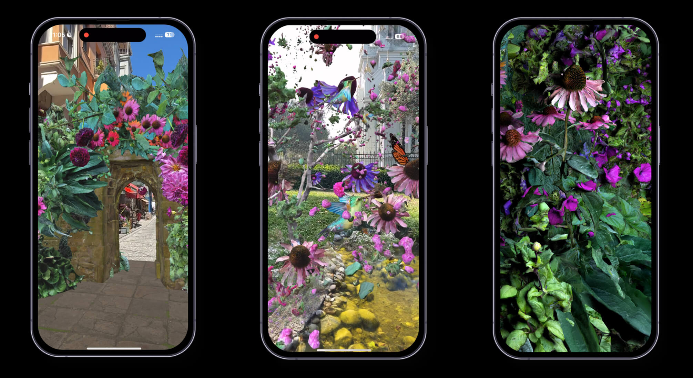
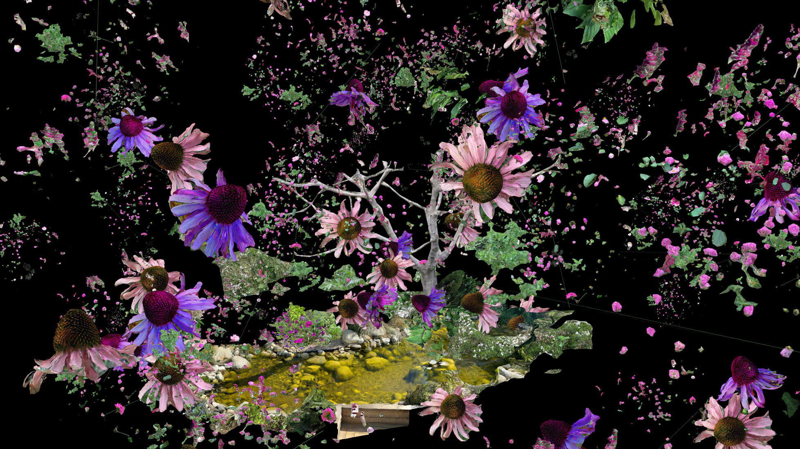
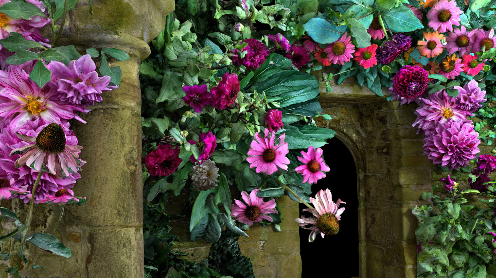
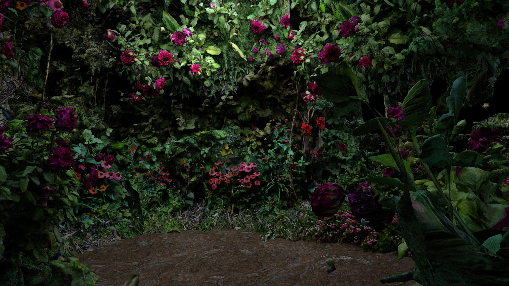
Floral Tracer is an experimental tool for immersive design that translates bodily movement into virtual gardens. Imagine your body as a brush painting petunias, and space as a botanical canvas: your surroundings are transformed into a living vegetal dream.
Beyond its role as a professional design tool, the application offers a distinctive artistic experience accessible to all. Within this environment, participants are invited to perceive architecture through the movements it generates and to consider themselves as a vital source of vegetal life.
Join this experience of virtual botany and explore the relationship between the human body and hybrid spaces in which image and intelligence are spatialized.
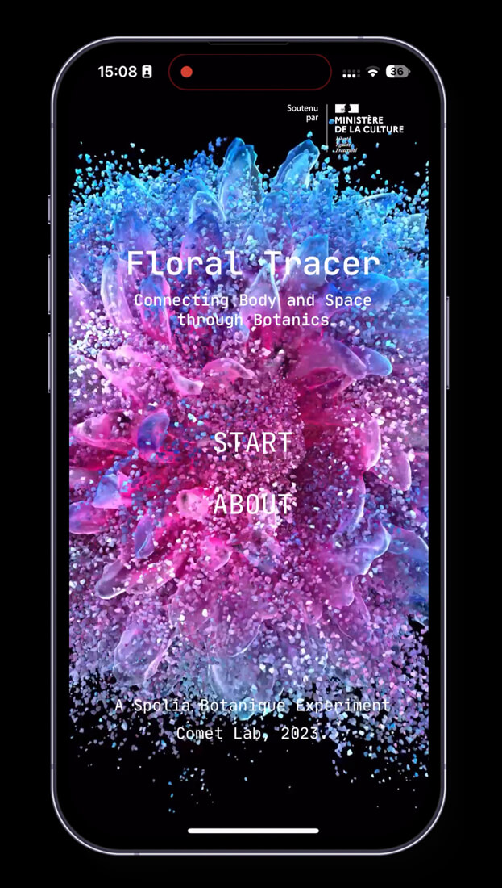
Users of the application can populate the streets around them with fantastical gardens. They have access to a series of base compositions created by students, derived from the digitizations conducted at the Garden Festival of Chaumont-sur-Loire. These festival gardens, virtually recycled by Comet Lab and reworked by architecture students, can in turn be reappropriated and recomposed by anyone wishing to construct a botanical utopia within their own city. In this way, we extend our principle of botanical spolia: the reuse of vegetal resources at a planetary scale.
Once a street has been transformed into a botanical utopia, the user can capture an image of their creation, which is then automatically uploaded to the application. Over time, these images form a map that reveals the progressive construction of a virtual botanical fabric spreading across cities worldwide. One might thus witness the emergence of the suspended gardens of Paris along Rue de Rivoli, those of Venice in Piazza San Marco, or those of Tokyo at Shibuya Crossing.
Accessible to all, this map becomes the interface for a new form of social exchange mediated through the vegetal imaginaries of urban space. Tracing a virtual botanosphere across global cities, it reveals a chlorophyll-infused vision of the city: one that is more inclusive, more egalitarian, and more holistic in its understanding of the relationship between urban life and nature.
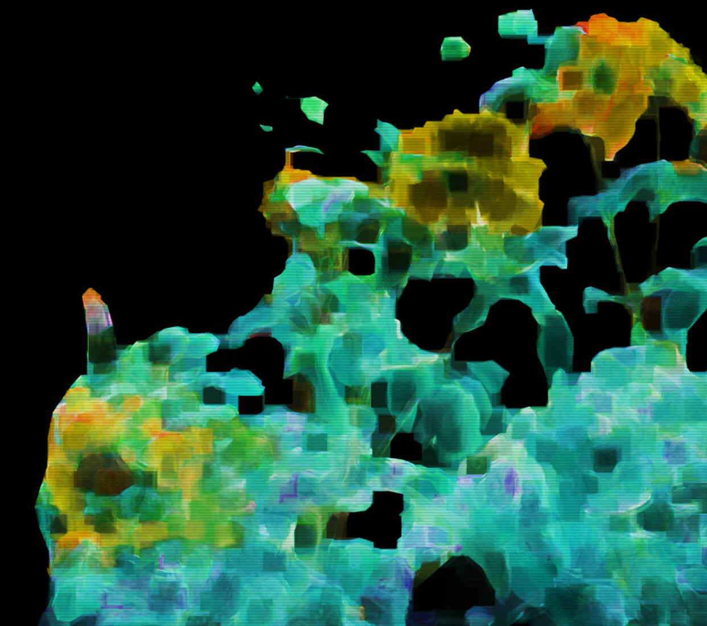
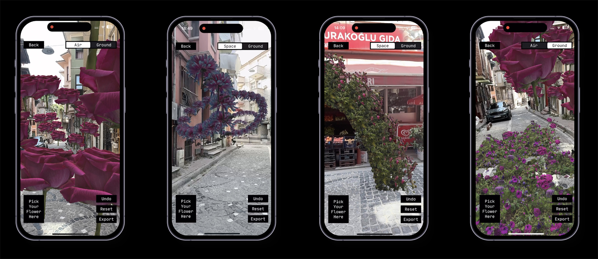
As the applications are developed using Apple's ecosystem, they are fully compatible with the company's mixed reality headset, scheduled for release in France in 2024.
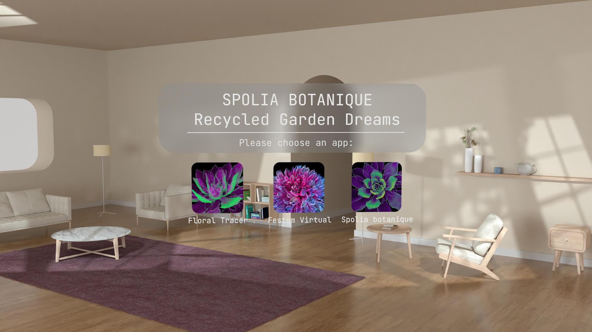
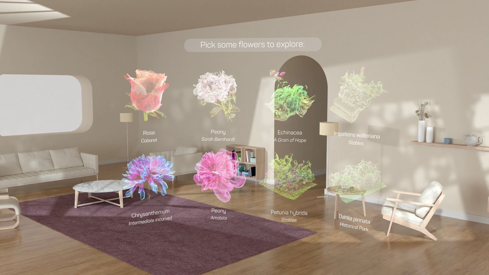
Invoke holographic gardens within your own space.
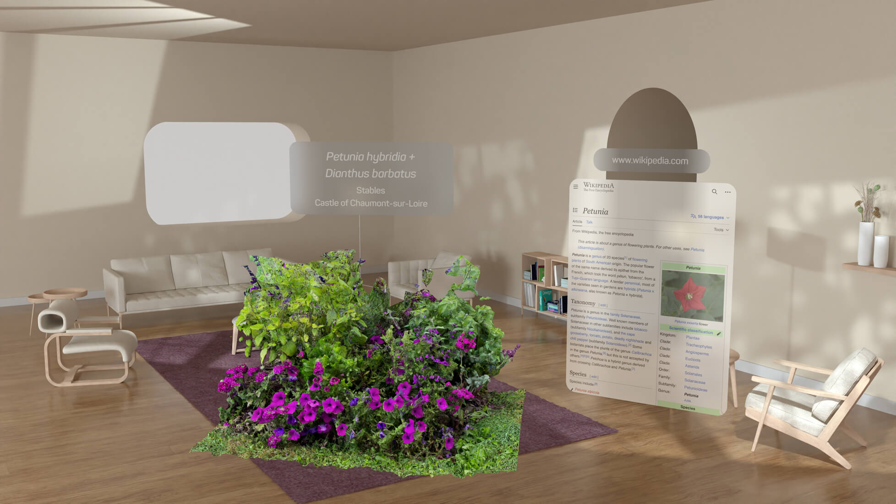
Invoke holographic gardens within your own space.
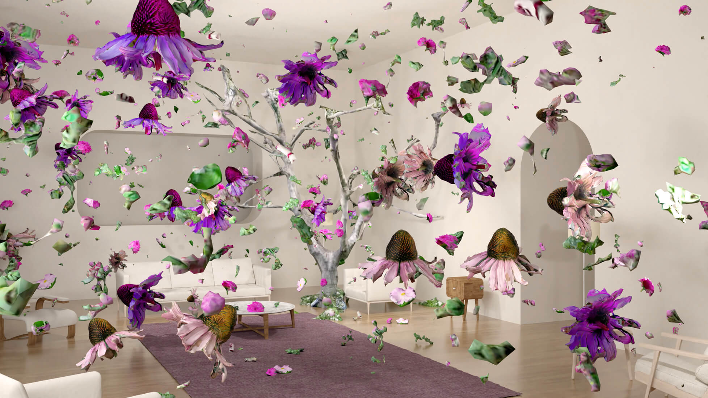
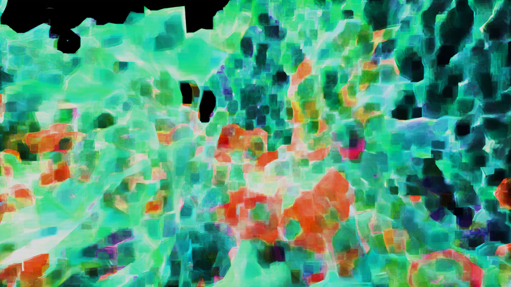
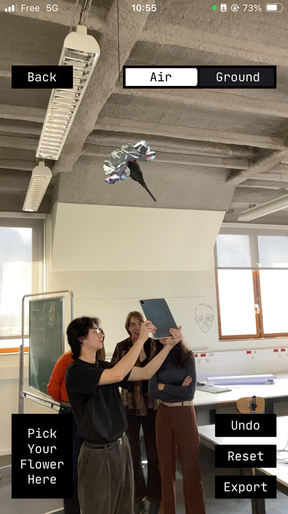
We conducted our user experience study with a group of 14 Master's students from ENSA Paris-Belleville on March 18 and June 10, 2024. This cohort, aged 21 to 24, provided a balanced representation of both men and women.
The primary objective of the experiment was to explore the potential of "immersive design" for architecture students and to evaluate the effectiveness of our application, Floral Tracer, in facilitating this experience. We sought to determine if our tool could tangibly improve and enrich their creative workflows.
While our focus remained primarily on Floral Tracer, the two additional applications, Spolia Botanique and Festum Virtual, were also evaluated. This allowed us to measure the students' mental and physical adaptation to augmented environments in which physical and virtual spaces merge into a singular experience.
The students were fully engaged from the outset, demonstrating a high level of involvement and a rapid capture of their attention. The interfaces of all three applications proved effective and intuitive, allowing for seamless navigation between different views. Furthermore, the instructions provided at the start of each session facilitated a smooth experimental flow that required no external intervention.
They perceived the hybrid design environment—woven by the application between physical and virtual realms—as a natural setting that encouraged exploration and curiosity. For the majority of students, the fusion of these spaces felt entirely intuitive, reaching a degree of fluid integration that exceeded our expectations. Previously, we had conducted tests with participants over the age of 50, where the tendency was to perceive the augmented environment on the screen as a traditional, flat image. For that demographic, it was often difficult to interpret the screen as a window into a three-dimensional place; they remained relatively static and required a significantly longer adaptation period.
In contrast, the students expressed that the virtual gardens were perceived as tangible and physical entities, comparable to real botanical environments. They would occasionally stop abruptly to avoid stepping on a virtual flower or colliding with a virtual tree, even while sometimes bumping into physical furniture in their pursuit of a specific digital composition. For these users, the environments were lived and experienced as authentically real.
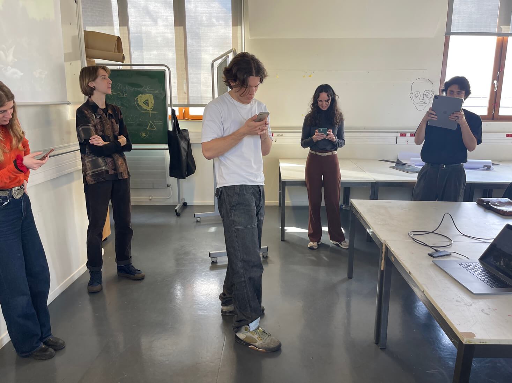
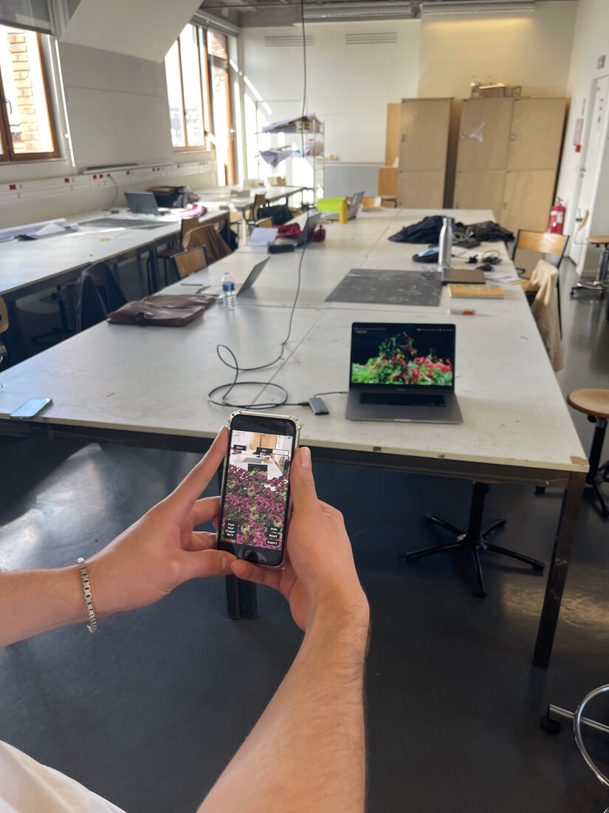
The applications performed reliably, operating without bugs or technical malfunctions throughout the study. To maintain peak performance, we intentionally omitted certain advanced features, such as occlusion. Currently, the application overlays 3D models on the camera feed without allowing physical elements, like a hand or foot, to appear in front of the digital objects. This limitation slightly reduces the immersive impact; for instance, one student noted that while walking over virtual plants, he could not see his feet on the virtual ground. While this feature could be integrated, it would require further optimization of the models to maintain stability.
The experiment took place in a standard classroom, where the applications demonstrated a sophisticated ability to recognize and map the physical environment. The virtual garden models were integrated into the space with high precision. We encountered no "model drift," a common issue in augmented reality caused by poor environmental detection. Instead, the applications provided consistent scene recognition, ensuring an intuitive and continuous design experience for every participant.
Each student naturally possesses their preferred tools; some favor paper and pencil, while others lean toward design software. Traditionally, these two groups are perceived as opposites in terms of their approaches, styles, and underlying schools of thought. However, while using our application, all students—regardless of their prior preferences—remained fully engaged and at ease. They reported that, much like with traditional sketching, their hands were directly involved in the design process, but with the vital advantage of creating directly within a three-dimensional environment rather than being restricted to two-dimensional representation.
The ability to generate 3D environments at their fingertips through various bodily gestures was crucial to the application's appeal across this diverse cohort. Participants indicated that this approach allowed them to transcend the conventional opposition between digital enthusiasts and proponents of classical methods. When the virtual image becomes spatialized and tangible, the application succeeds in merging the paradigms of artisanal and digital design: reconciling the hand and the pixel, and establishing a direct, manual relationship with the virtual universe.
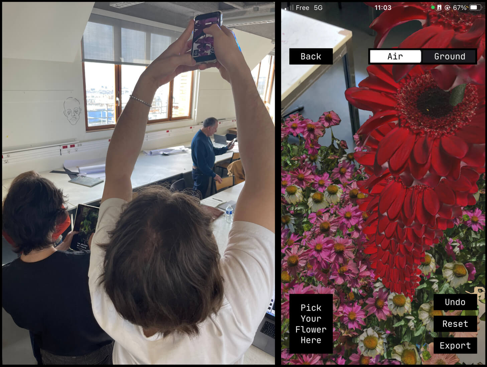
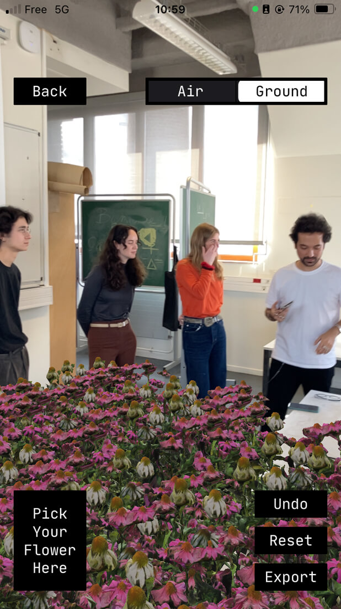
A key factor in the students' interest lay in the application's integration of bodily movement, which transformed a traditionally passive design process into a playful, kinesthetic experience. Instead of remaining seated at a desk—drawing on paper or a screen—the students walked, stretched, leaned, and navigated the classroom. This physical activity allowed them to develop an increased awareness of their immediate surroundings, constantly questioning its limits and potential. As their movements were instantaneously converted into virtual gardens integrated into the physical environment, they developed a perception of their body as an active agent in the creation of space.
The students quickly adapted to these hybrid environments and began to produce designs that leverage the unique characteristics of immersive design, distinguishing it from conventional 3D modeling on a computer.
By creating their designs directly within the image captured by the camera, the students utilized a canvas that was not the abstract, blank surface of a page, but a site animated by people and events. As a result, their creations showed a stronger connection with the activities taking place in the classroom and with the subtle details of the furniture and walls.
The students' creations were further distinguished by a specific volumetric plasticity. The gardens were not designed and generated in 2D, plan by plan; instead, they were the result of an instantaneous, three-dimensional creativity. They occupied not only the flat planes of the classroom, such as the floor and walls, but also the full volume of the room. The air—situated between the walls and often left as a white void on a traditional architectural plan—became a place that could host a variety of shapes and colors. It served as the direct medium of design rather than a consequential, unconsidered space assumed to be empty. These gardens were clearly not derived from plans and sections, but rather from depth and height: from the thickness of the space and the spatial paradigm that the image traversed.
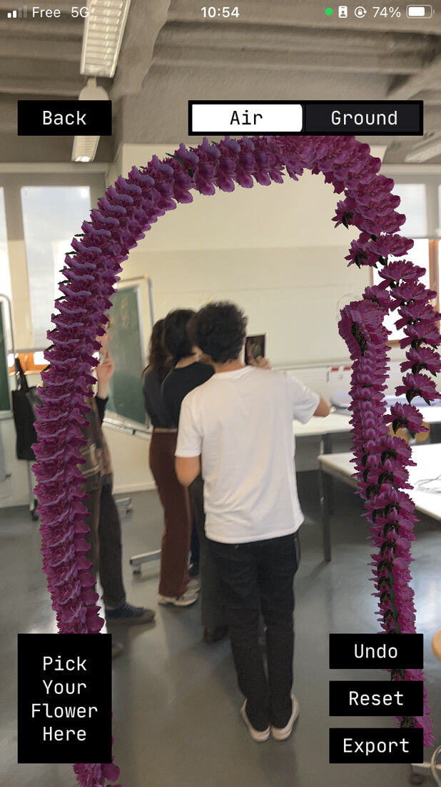
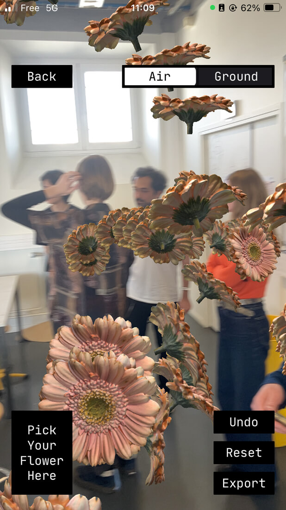
The designs also demonstrated that the virtual space with which we extend our physical reality does not necessarily have to be Newtonian or Euclidean. It is a realm where traditional laws of physics, such as gravity, can be entirely abandoned. In this way, a fantastic and unusual reality becomes an integral part of daily life in a tangible and interactive manner. The conventional perception of space and time becomes fundamentally invalid, even within the most mundane activities. The application proved that this new spatial paradigm requires tools that prepare students for such a shift, allowing them to design space in a more fluid and malleable manner. By embracing this freedom, the designer moves beyond the rigid constraints of the physical world toward a more speculative and liberated architectural practice.
Our user experience test demonstrated that the application is more than a design aid; it serves as a catalyst for creative debate regarding architecture in the era of the climate crisis and artificial intelligence. Ultimately, the experiment prompted students to question fundamental aspects of architectural education and the design process. While proving their potential as generative tools, our applications enabled students to rethink architecture in relation to technology and nature. They were encouraged to reconsider the role of the body and the senses in space, moving beyond traditional oppositions such as virtual versus physical, nature versus technology, or body versus architecture.
The final discussion addressed a wide range of topics related to architectural design, including sensory and chromatic approaches, plant philosophies, new materialism, and "digital crafts." Students also examined the various design processes and teaching methods practiced in schools across France and abroad, enriching the debate with their international experiences and knowledge of diverse art, design, and fashion institutions. Ultimately, the experiment fostered an interdisciplinary and collaborative dialogue on the future of contemporary architecture.
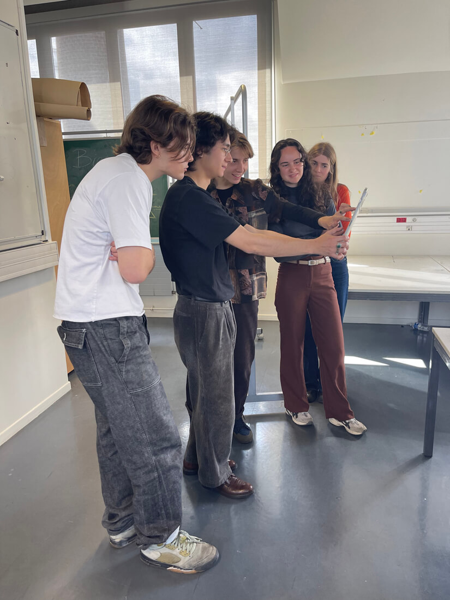
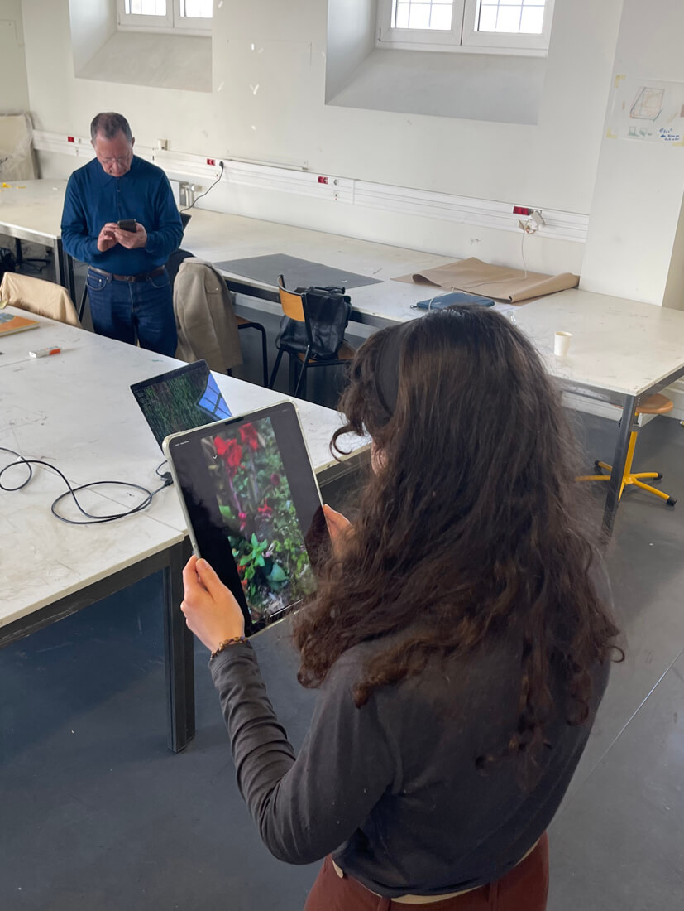
The students had not previously encountered the concept of "immersive design" or experienced such a methodology. The applications we proposed were fundamentally distinct from any tools they had utilized during their studies at ENSA Paris-Belleville. Consequently, the experiment had an emancipatory and inspiring effect on the participants. They expressed that the application offered a new creative perspective for perceiving architectural space and the human body, inviting them to imagine novel compositions and sensations within the discipline.
Beyond the specific immersive design process we proposed, the experience encouraged them to develop more personalized methods and to reappropriate conventional design tools in experimental ways. This shift empowered them to cultivate more innovative architectural projects that challenge standard practices.
The students demonstrated a profound interest in this active, kinesthetic design process. We are observing a growing trend among our students toward practices involving manual labor and direct human interaction, such as the artisanal traditions of carpentry and masonry. This interest extends to creative environments like studios, construction sites, workshops, and fablabs; our application appeared to directly address these evolving needs.
The students also inquired about the possibility of exporting their models to a computer for further refinement. This functionality is already integrated into the application, and the participants found it highly advantageous to incorporate this innovative tool into more conventional architectural workflows.
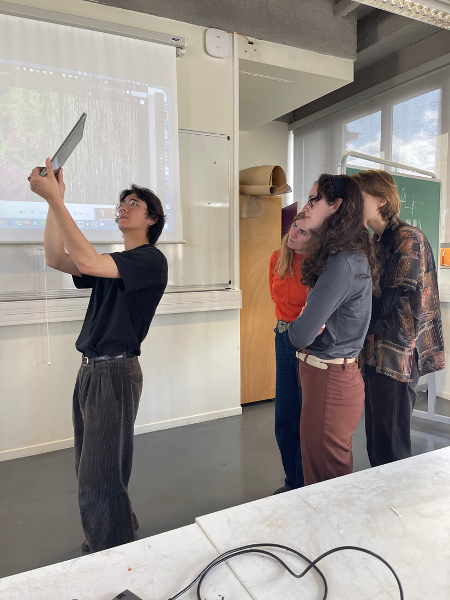
We observed varying levels of immersion, distinct degrees of adaptation, and unique expectations shaped by the tools each student had already mastered, as well as the specific subjects they prioritize in their work. The feedback revealed that the application interacted dynamically with these diverse methods while offering fresh opportunities to question fundamental aspects of architectural design.
Working on floral patterns in Neapolitan earthenware, Jérémie realized that the flowers are consistently positioned at the same angle, parallel to the ground, regardless of the angle at which the phone is held. He noted that rotating the flowers in accordance with hand movement could significantly increase immersion. However, he also observed that Floral Tracer fundamentally alters the design process, allowing for a deeper interrogation of scale, the body, perception, material, and color.
Working on innovative forms of urbanism in the suburbs of Seoul, Doriann adopted the application with remarkable speed and began drawing gardens almost immediately. He remarked several times that the virtual gardens appeared so "present" that he almost tripped over a virtual stone or altered his path to avoid one. He also highlighted the positive impact of the app on the heightened perception of space and materials.
Working on sensory experiences in Stockholm, Julie expressed a slight lack of immersion and realism regarding the ground plane. Focusing on "promenades" in her research, she reported that the virtual ground is not visualized under the user’s feet, but rather appears layered on top of them. Despite this, she appreciated how the tool allows for a radical reconsideration of the interactions between the body and space, and how material and color influence sensory perception.
Working on precarious Indian habitats, Mathilde required additional time to accept the screen image as a three-dimensional environment. Unlike students who primarily work on computers, Mathilde—who favors hand drawing—initially needed more time to view the mobile phone as a window opening onto a hybrid world, moving within the space rather than observing it from a fixed position. Nevertheless, she recognized that the application opens new perspectives regarding spatial design and the nuanced understanding of scales and materials.
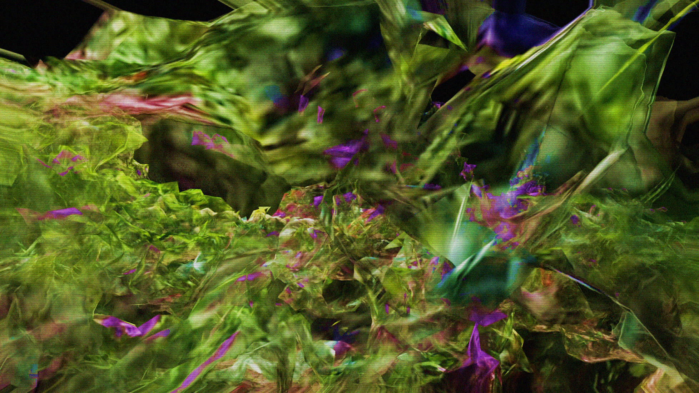
We successfully achieved all the objectives defined at the proposal stage.
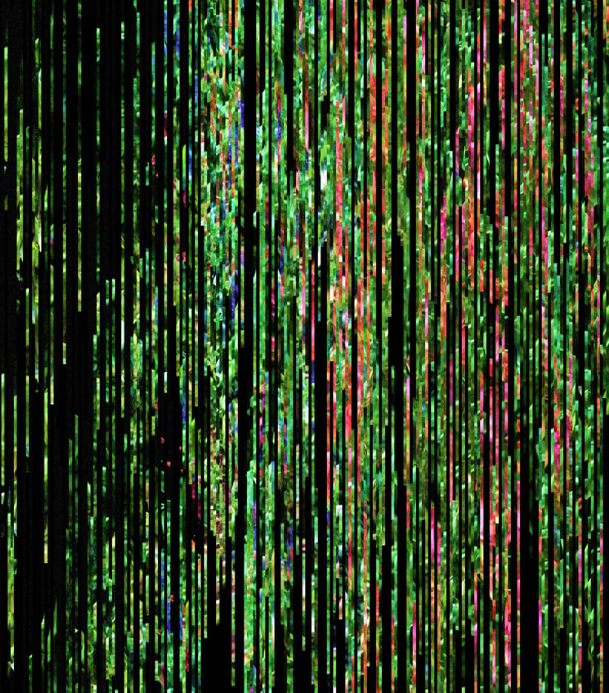
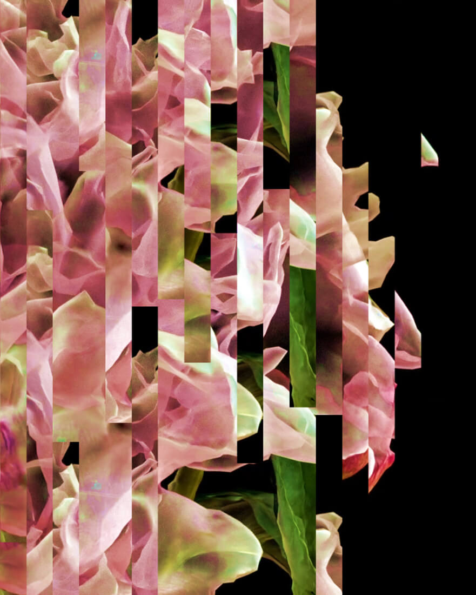
We developed two application models within the project:
Both models rely on a shared set of basic components:
These foundational elements are combined with different 3D components to create two distinct augmented reality experiences, opening up two complementary paths for replication.
This model enables the exploration of places or objects through two distinct modes: standard 3D and augmented reality. It provides a versatile framework for both interactive 3D viewing and context-aware AR visualization.
The system is particularly suited for the design of exhibitions, immersive museums, or virtual archives for diverse 3D datasets. Furthermore, it serves as a powerful research tool for scholars in the digital humanities. For instance, a researcher studying the remains of Pompeii could digitize artifacts in 3D rather than relying on traditional photography, later examining them within an immersive environment as if physically present.
Initially developed for the Festum Virtual application, this model has already been successfully integrated into Spolia Botanique, demonstrating its adaptability across different research and creative contexts.
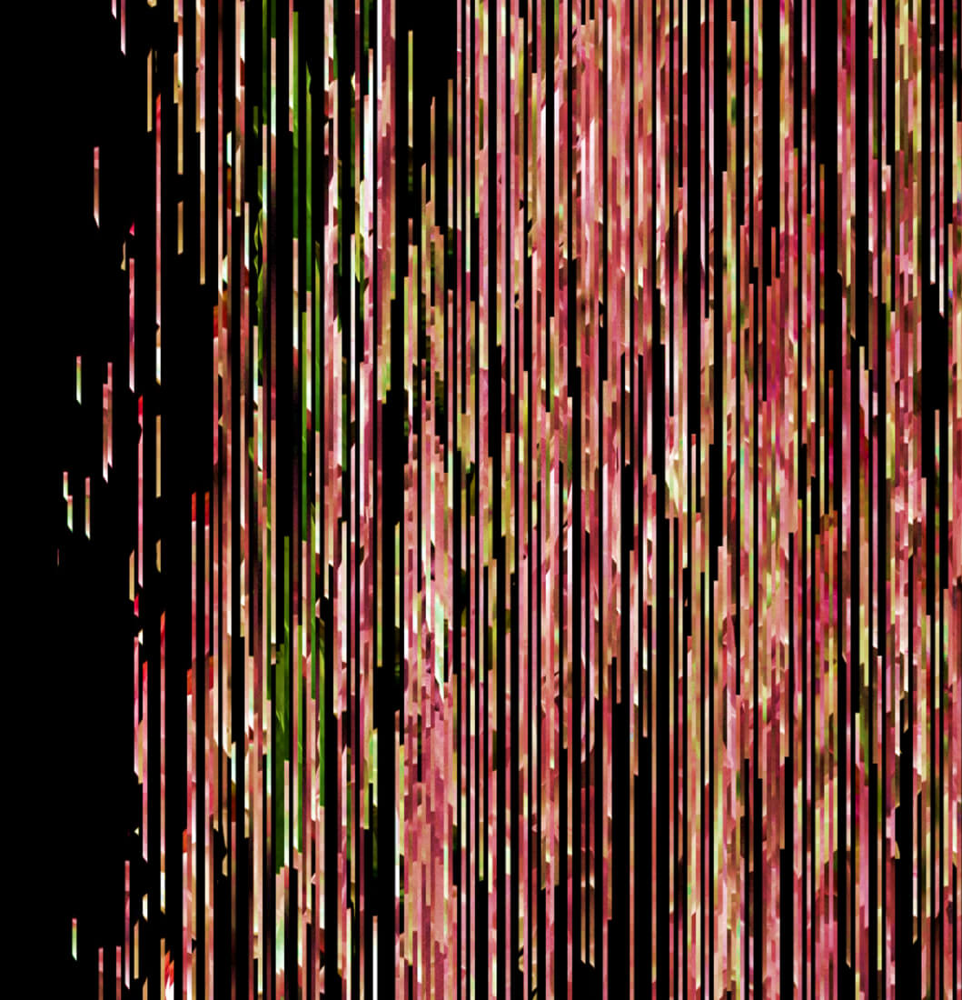
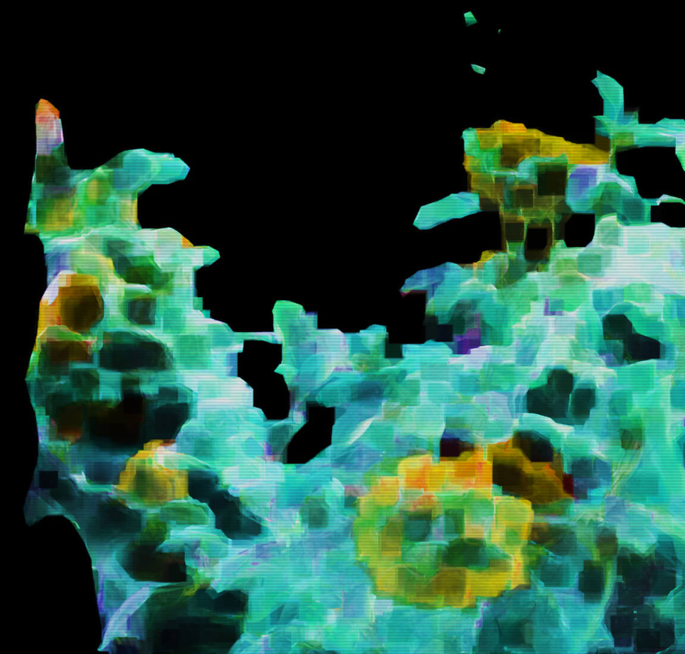
This model captures the precise position and orientation of the mobile device, calculating these fluctuations to generate a virtual trajectory onto which 3D objects are anchored.
By prioritizing the recording of bodily movement, this model serves as a foundation for projects centered on gesture and motion. Its applications extend across various disciplines, from dance and experimental artistic practice to educational tools designed to introduce complex topics to younger audiences through physical engagement.
Initially, we intended to conduct experiments with student cohorts over a full semester or through intensive workshops, as collective engagement was essential to the project's methodology. Although ENSA Paris-Belleville was a partner, administrative constraints made it impossible to establish a formal course. Furthermore, the academic year was significantly disrupted by student strikes.
In response to these challenges, we welcomed two architecture students as interns. Their involvement allowed us to rigorously test various methods, tools, and approaches within the realm of immersive design. These experiences proved highly beneficial, contributing to the technical refinement of the project while providing deep insights into the opportunities and limitations of integrating augmented reality into architectural practice.
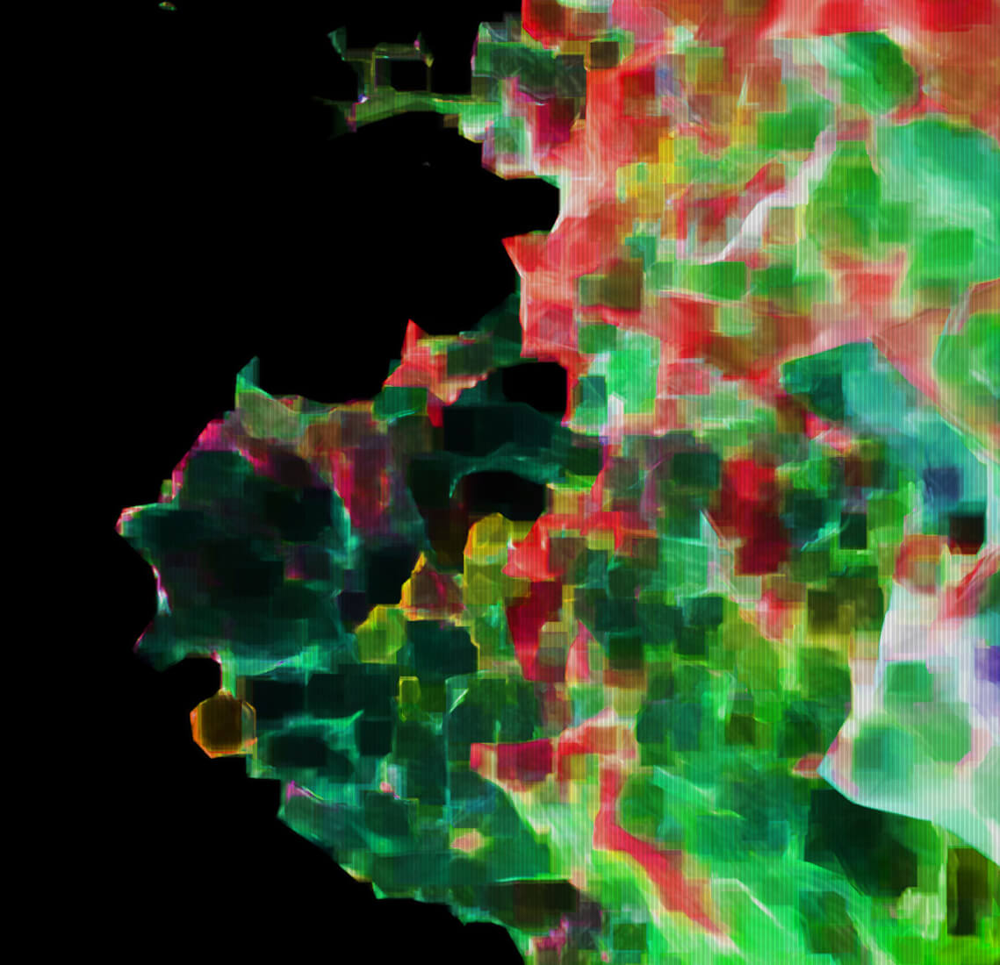
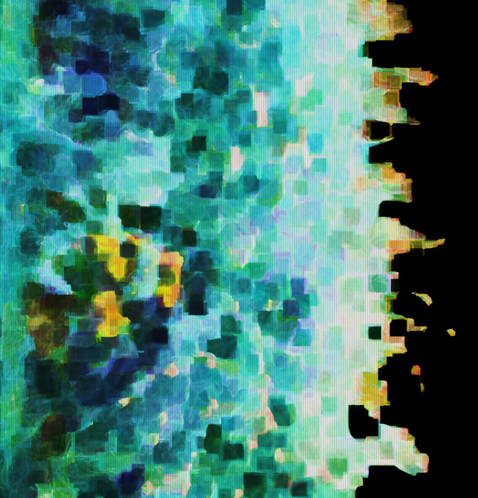
While all initial objectives were successfully achieved, we had originally envisioned a broader scope for the project. In particular, we aimed to integrate a mapping interface within the application to aggregate user-generated botanical transformations of urban spaces—effectively creating a form of botanical communication unfolding within augmented space. However, this feature could not be implemented during this phase due to technical compatibility conflicts between the various development tools.
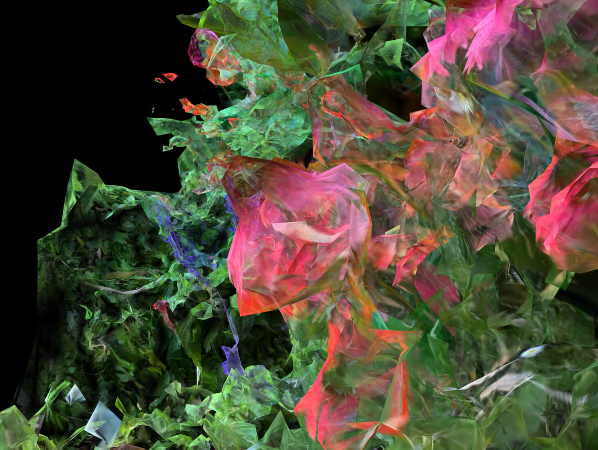